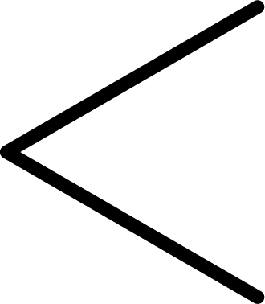
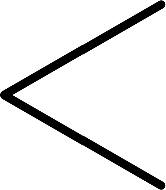

Sanford Biggers
"Solo attraverso un dialogo riflessivo sulla storia e sulla razza possiamo evolvere come individui e società".
Come artista concettuale, cerco costantemente modi creativi per far nascere conversazioni stimolanti. Faccio questo attraverso pittura, scultura, filmati e teatro. Ma al di là del formato, due fonti d'ispirazione che preferisco sono la storia e il dialogo. Nel 2007 ho creato "Lotus", con un diametro di 200 cm e un peso di 270kg, raffigurazione in vetro di un fiore di loto. Nel Buddismo, il loto è simbolo del trascendente, della purezza della mente e dello spirito. Ma uno sguardo più vicino a questo loto rivela che ogni petalo raffigura la sezione di una nave da schiavi. Questa immagine simbolica è stata presa da un manuale britannico sulla schiavitù e più tardi utilizzato dagli abolizionisti per mostrare le atrocità della segregazione razziale. In America non ci piace parlare della schiavitù, e nemmeno la vediamo come un'industria globale. Ma utilizzando questo simbolo buddista, spero di universalizzare e superare la storia e il trauma dell'America nera e incoraggiare discussioni sul nostro passato comune. Ho collezionato statuette di legno africane da negozi turistici e mercati delle pulci in giro per il mondo. La loro autenticità e origine sono assolutamente discutibili, ma le persone credono che portino buona fortuna, o che siano magiche. Solo recentemente ho capito come utilizzarle nel mio lavoro. A partire dal 2012, il mondo ha visto l'uccisione di Trayvon Martin, Michael Brown, Eric Garner, Sandra Bland, Tamir Rice e numerosi altri cittadini neri non armati per mano di poliziotti, che spesso se la cavano senza alcuna punizione. In considerazione di queste vittime e delle volte che io stesso, rispettoso della legge, professore della IVY League, sono stato preso di mira e minacciato con la pistola puntata dalla polizia, ho creato questa raccolta di lavori chiamata semplicemente "BAM".Era importante che venisse cancellata l'identità di ciascuna statuetta, per farle sembrare uguali, e più facili da ignorare. Per questo le ho coperte con della spessa cera marrone prima di portarle in un poligono dove le ho riscolpite utilizzando pallottole. Ed è stato divertente, giocare con grosse armi e videocamere ad alta velocità. Ma il mio rispetto per queste statue mi ha frenato nel premere il grilletto, mi sentivo come se sparassi a me stesso. Alla fine, il mio cameraman, Raul, ha sparato i colpi. Dopo ho raccolto i frammenti e creato stampi che ho prima riempito con cera, e poi con bronzo. Durante una recente mostra a Miami una donna mi disse di sentire ogni sparo nell'anima. Ma ha anche sentito che queste opere d'arte commemoravano le vittime di queste uccisioni come anche altre vittime di violenza razziale nella storia degli USA. Ma "Lotus" e "Bam" vanno oltre la storia americana. Lo scorso anno durante una mostra a Berlino, uno studente di filosofia mi chiese cosa alimenta queste uccisioni. Gli ho mostrato la foto di una cartolina raffigurante un linciaggio di inizio '900 e gli ho ricordato che queste uccisioni sono andate avanti per oltre 500 anni. Ma è attraverso domande così e dialoghi riflessivi sulla storia e la razza che possiamo evolvere come individui e società. Spero che le mie opere offrano un luogo sicuro per questo tipo di scambi di opinioni e un'opportunità per le persone di impegnarsi tra loro in conversazioni vere e necessarie.
Per saperne di più
visitate la pagina --> prsonale di Sanford Biggers
Biografia
Nata a Los Angeles, lavora a New York, Sanford Biggers crea opere che integrano film, video, installazione, scultura, disegno, musica originale e performance. Ha intenzionalmente complicato questioni come l'hip hop, il buddismo, la politica, l'identità e la storia dell'arte per offrire nuove prospettive e associazioni per i simboli stabiliti. Il significato del lavoro di Bigger all'interno della società contemporanea è stato celebrato attraverso mostre personali sia a livello nazionale che internazionale, più recentemente al Brooklyn Museum, Sculpture Center e Mass MoCA. Ha partecipato a residenze di prestigio e borse di studio tra le tante: Akademie Schloss Solitude, Stoccarda, Germania e Castello Ujazdowski, Varsavia. È stato membro del Creative Time Global Residency, del Socrates Sculpture Park Residency, del Lower Manhattan del Cultural Council World Views AIR Program, della Eyebeam Atelier Teaching Residency, dello Studio Museum AIR Program, della P.S. 1 programma di studio internazionale e la scuola di pittura e scultura Skowhegan. Le installazioni, i video e gli spettacoli di Biggers sono apparsi in vari luoghi in tutto il mondo, tra cui Tate Britain e Tate Modern a Londra, il Whitney Museum e lo Studio Museum di Harlem, New York e Yerba Bue un Center for the Arts di San Francisco, oltre che in Cina, Germania, Ungheria, Giappone, Polonia e Russia. Biggers ha vinto premi tra cui: l'American Academy in Berlin Prize, Greenfield Prize, New York City Art Teachers Association Artist of the Year, Creative Time Travel Grant. Biggers è Assistant Professor al programma di arti visive della Columbia University e membro del consiglio di amministrazione di Sculpture Center, Soho House e CUE Foundation. Ha anche insegnato al programma di Scultura e ampliamenti della Virginia Commonwealth University ed è stato visiting scholar presso il dipartimento VES dell'Università di Harvard nel 2009.


 
